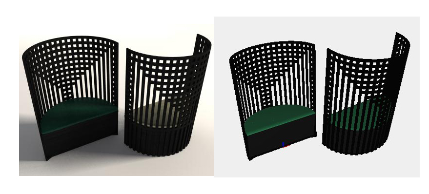
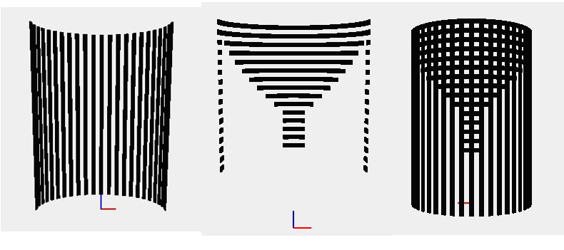
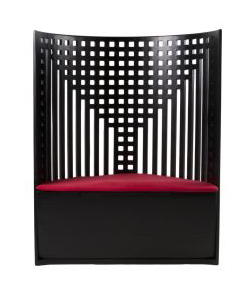
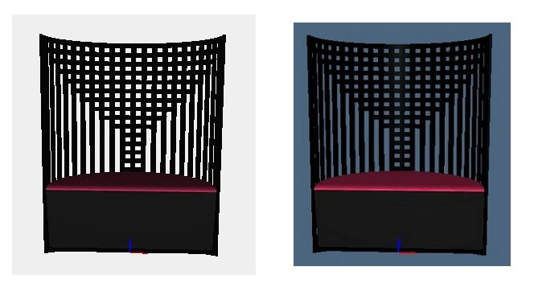

Charles Rennie Mackintosh, Willow Chair, 1902

To build the back of the chair I used two functions: the first generates the vertical components and the second produces the horizontal ones. In particular, the function vertical_back performs the rotation around the axis z of a single component in order to get all the others.
function vertical_back(f,n){
var fig = f;
for(i=0; i<n; i++){
f1 = R([0,1])(Math.PI/22.5)(fig);
fig = STRUCT([fig,f1]);
}
return fig;
};
Instead the function horizontal_back generates the horizontal components through the use of parametric domains.
function horizontal_back(h){
var d = PI-(2*h*PI/22.5);
var domain = DOMAIN([[0,d], [4.11,4.21]])([36,1]);
var mapping = function(v){
var a = v[0];
var r = v[1];
return [r*COS(a), r*SIN(a)];
};
var m = MAP(mapping)(domain);
var m1 = EXTRUDE([0.286])(m);
var model = R([0,1])([h*(PI/22.5)])(m1);
return model;
};

Below are shown images that compare models made respectively in javascript and python with the original model:
Original model:

Javascript and python models:

View javascript code